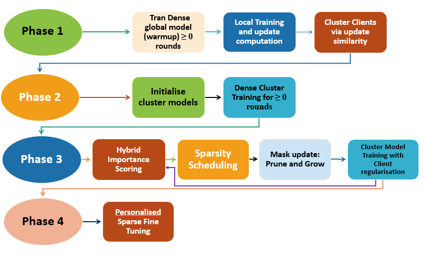
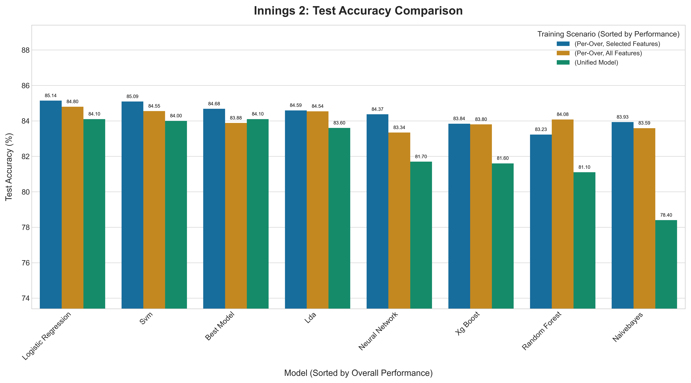

About Me
I am a Computer Science and Engineering student at the Indian Institute of Science Education and Research, Bhopal. My primary areas of interest include Deep Learning, Efficient AI for Edge Devices, Federated Learning, Statistics, and Game Theory.
Projects
Modeling Affective Distress from Video: A Modality-Aware Multi-Branch Learning Approach
Published in Proceedings of the 28th ACM International Conference on Multimodal Interaction (ICMI '26)
This research presents MAMBL, a modality-aware Multiple Instance Learning (MIL) framework for automated affective distress and anxiety assessment from clinical interview video feeds. We identify a fundamental temporal-structural mismatch across behavioral modalities: facial Action Units (AUs) represent sparse, high-frequency micro-expressions, whereas head pose and gaze dynamics exhibit continuous, autocorrelated momentum. To respect these distinct inductive biases, MAMBL introduces decoupled branch architectures—a 1D CNN for sparse AU events and a bidirectional LSTM for smooth rigid head and eye movements.
The representations are unified via a gated temporal attention pooling mechanism and gradient-based spatial saliency. Evaluated on a clinical Trier Social Stress Test (TSST) dataset, MAMBL achieves 71.04% classification accuracy and competitive performance across StressID, UBFC-Phys, and AVEC 2017 benchmarks.

Teacher-Guided Discriminative Flow Matching for Latent Representation Learning
Accepted at Northern Lights Deep Learning Conference (NLDL 2027)
This work introduces Discriminative Flow Matching (DFM) for robust latent representation learning. We train a time-dependent neural vector field to transport latent representations along straight-line probability paths between a source noise prior and class-conditional target representations supervised by a momentum-updated exponential moving average (EMA) teacher network.
By incorporating a learned scalar gating parameter, DFM dynamically balances continuous vector field alignment with discriminative supervision. Empirical evaluation demonstrates superior classification accuracy, well-separated latent cluster geometries, and substantially lower Expected Calibration Error (ECE) compared to standard cross-entropy and self-supervised contrastive baselines.
Preprint / Camera-ready available upon request (proceedings to appear).

CA-AFP: Cluster-Aware Adaptive Federated Pruning for Heterogeneous FL
Under Submission at ACM IKDD CoDS-COMAD 2026
CA-AFP is a clustered dynamic sparse federated learning framework engineered for resource-constrained edge computing environments experiencing severe statistical (non-IID) and system heterogeneity. We integrate a dynamic "Prune-and-Heal" parameter exploration with trajectory-cosine client clustering, enabling client groups with similar data distributions to collaboratively discover personalized sparse network topologies.
Our hybrid importance scoring mechanism evaluates weight magnitude, intra-cluster coherence, and gradient consistency during iterative pruning and regrowth. Evaluated across CIFAR-10, CIFAR-100, FEMNIST, and WISDM datasets, CA-AFP maintains robust model performance at up to 70% parameter sparsity, significantly reducing communication overhead while improving fairness (minimizing variance in client accuracy).

Predictive Modeling in ODI Cricket: Training Strategy, Feature Engineering, & Explainability
Under Review (Revision Stage) at International Journal of Sports Science & Coaching (SAGE Publications)
This research develops a comprehensive machine learning framework for predicting match outcomes in One Day International (ODI) cricket across 1,394 historical matches (2002–2023). To address realistic operational deployment and eliminate temporal data leakage, we implemented a rigorous chronological expanding-window cross-validation strategy.
We engineered granular ball-by-ball and over-by-over situational features and benchmarked multiple models including Logistic Regression, SVM, Random Forest, XGBoost, and Deep Neural Networks. Our findings establish that a Unified Inning Model performs best in the first innings where win probabilities evolve smoothly with overall run-rate and historical team form. Conversely, the second innings is governed by volatile chasing dynamics, where our proposed adaptive Over-Wise Model Switching strategy achieves an outstanding 84.6% prediction accuracy. Game-theoretic SHAP interpretability analysis quantitatively illustrates how feature importance transitions across key phases of the game.

Vehicle detection and speed tracking
The purpose of this project was to build an automated system for monitoring traffic flow and enforcing speed limits. By training a YOLOv8 model, we achieved real-time vehicle detection and classification from video feeds. The system uses perspective transformation to accurately calculate the speed of each vehicle as it passes through a user-defined zone. This technology is highly valuable for intelligent traffic management systems, enhancing road safety and surveillance capabilities.

Dimensionality Reduction Analysis
High-dimensional data can be computationally expensive and difficult to interpret. This project provides a comparative analysis of key dimensionality reduction techniques like PCA, LDA, and t-SNE. We applied these algorithms to various datasets to evaluate their effectiveness in preserving important data structures while reducing complexity. The work serves as a practical guide for selecting the appropriate technique for feature extraction and data visualization in machine learning workflows.

Crater and Boulder Detection on Planetary Surfaces
This project automates the identification of geological features from planetary images, a critical task for rover navigation and scientific analysis. We implemented a computer vision pipeline using the Canny edge detector and Circular Hough Transform to accurately locate craters and boulders. This automated approach is far more efficient than manual analysis, enabling faster mapping of extraterrestrial surfaces and aiding in the selection of safe landing sites for future missions.

Image Analysis with SIFT, BoW, and HOG
This project delves into classical feature-based image classification methods. We implemented the Scale-Invariant Feature Transform (SIFT) to extract robust keypoints from images, which were then clustered into a "Bag of Visual Words" (BoW). By creating histograms from these visual words, alongside Histogram of Oriented Gradients (HOG) features, we built a powerful model for classifying images. This work is fundamental to understanding the building blocks of many modern computer vision systems.

Data Visualisation: Energy, Occupancy, and Weather
The goal of this project was to uncover hidden patterns and relationships within complex, multi-source datasets. By merging and visualizing data on energy consumption, building occupancy, and corresponding weather conditions, we aimed to identify key factors influencing energy usage. This type of analysis is crucial for developing smarter, more efficient energy management systems and promoting sustainable building practices through data-driven insights.

Optimal Design of Serosurveys during Pandemic
Under the supervision of Dr. Rajesh Sundaresan at IISc Bengaluru, this project focused on the optimal design of serosurveys for disease burden estimation. The work involved determining how to best distribute a budget for various tests to accurately estimate disease prevalence. Key concepts studied include Maximum Likelihood Estimators, the Fisher Information matrix, Convex Optimisation, and Game-Theoretic approaches.
Achievements & Responsibilities
- Reliance Foundation Scholarship (2022-2026)
- Teaching Assistant for "Data Science in Practice" (2025)
- INSA-IASC-NASI Summer Research Fellow at IISc Bengaluru (2024)
- Coordinator: Economics Club, IISER Bhopal (2024-25)
- Qualified JEE-Advanced (2022-2023)
- Secured All India Rank 98 in IMU-CET examination (2022)
- Qualified NDA-149 examination (2021)
Education
BS Computer Science and Engineering, Minor Data Science (Dec 2022 - May 2026)
Indian Institute of Science Education and Research, Bhopal
CPI: 8.76
All India Senior School Certificate Examination (2022)
Chinmaya Vidyalaya Bokaro Steel City, Jharkhand
Score: 94.2%
All India Secondary School Examination (2020)
DAV Public School Jhanjharpur, Bihar
Score: 96.4%